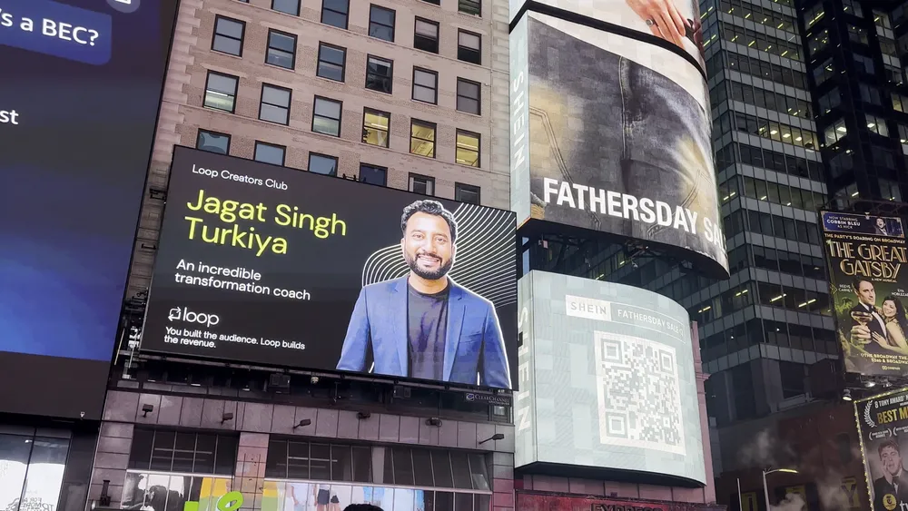
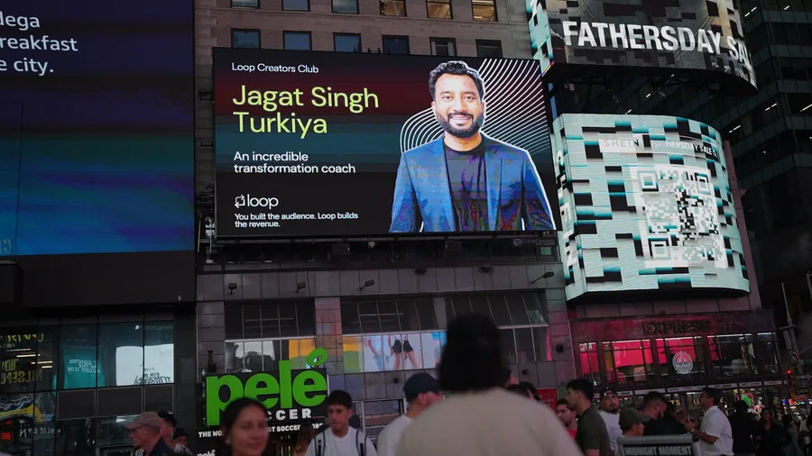

Strategic life, wealth, and leadership advisory for high-performing founders and executives.
An integrated advisory foundation combining executive life coaching, strategic financial consulting, and published literature.
When you lead teams and manage high stakes, your real competitor is never the market—it’s your own mental fatigue, self-doubt, and hesitation loops. Jagat works with leaders to build relentless execution habits that outlast temporary motivation.
Earning ₹5L to ₹10L+ a month is an offense. Keeping it, allocating it, and defending it is defense. Jagat installs an objective financial operating system that plugs hidden lifestyle leaks and compounds wealth without market gambling.
Author of 5 widely read books dissecting chronic procrastination, real-world grit, lifelong companionship, and family peace. Written from raw lived experience—not textbook theory—and read across 9 countries.
Acknowledged nationally and internationally for dedicated contributions to human transformation, leadership, and public education.
Participant & speaker associated with the historic global World Record event for mass leadership empowerment.
Honored with the Icon 2024 recognition for sustained impact in human performance and mentorship excellence.
Conferred for outstanding dedication to personal transformation, grassroots empowerment, and social upliftment.
Featured on the prestigious Times Square digital billboard in New York City, spotlighting his global leadership message.
Featured in the heart of Manhattan, NYC — spotlighting Indian leadership, resilience, and transformational wisdom on the global stage.


The feature in Times Square stands as proof of a singular principle: authentic resilience and value-driven leadership know no geographic boundaries. Jagat's mission continues to expand globally, mentoring professionals and founders to unlock clarity and purpose.
Representing transformative Indian leadership in the world's commercial capital.
Lives Impacted Globally
Confidential 1-on-1 Sessions
Years Strategic Experience
Published Books Authored
Before addressing thousands from auditorium stages, Jagat walked 4 kilometers on foot every single day for 12 consecutive months simply to save ₹30 in daily transit expenses. That formative season permanently dismantled all excuses and built the foundation for the discipline, empathy, and absolute clarity he brings to his advisory practice today.
With over 15 years as an enterprise IT specialist and strategic coach, he established Minderist Training LLP and Aapka Coach (apkacoach.com) — an enterprise platform equipping corporate leaders and consultants with institutional coaching frameworks.
"When you begin to believe in yourself, your life begins to transform. Think Different, Make Difference."
— Jagat TurkiyaVerbatim reviews from executives, business owners, and coaches whose clarity, mindset, and wealth roadmaps were permanently elevated.
"Working with Jagat was a great experience. He helped transform my mindset and gave me the exact clarity to achieve my goals. His coaching has been invaluable in helping me find purpose and direction!"
"He is always providing handholding support to face challenges and overcome them. The tools and systems he uses in his coaching process are very easy to use and connect with easily."
"Working with Jagat Turkiya has been life-changing. His guidance, support, and insight have helped me overcome challenges and reach new heights in my personal growth. Jagat's approach is both empowering and compassionate."
"Jagat has in-depth knowledge about the subject. Always ready to help and support people who want to grow in life. His guidance is practical, straightforward, and easy to connect with."
"Jagat is a very talented, calm, patient, empathetic, and empowering coach. He is very easy to talk to, which makes the environment of coaching very pleasant and productive. He helped me transform my mindset and gave absolute clarity."
"Jagat is an outstanding mind hacker coach who provides relentless clarity, structured frameworks, and unmatched guidance within masterminds and executive growth."
Due to extensive mentorship commitments, Jagat Turkiya and his advisory team evaluate candidates through private diagnostic strategy calls. Submit your application to review your roadmap and cohort eligibility.